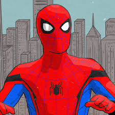
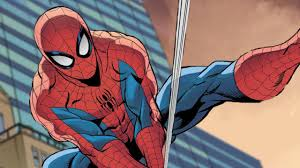
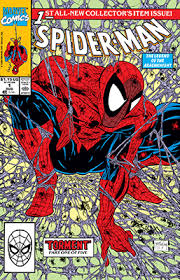

Who is Spiderman?



Spider-man is a superhero appearing in American comic books published by Marvel Comics.
Created by writer-editor Stan Lee and artist Steve Ditko, he first appeared in the anthology comic
book Amazing Fantasy #15 (August 1962) in the Silver Age of Comic Books. He has been featured in
comic books, television shows, films, video games, novels, and plays.Spider-Man's secret
identity is Peter Benjamin Parker. Initially, Peter was depicted as a teenage high-school
student and an orphan raised by his Aunt May and Uncle Ben in New York City after his parents
Richard and Mary Parker died in a plane crash. Lee and Ditko had the character deal with the
struggles of adolescence and financial issues and gave him many supporting characters, such as
Flash Thompson, J. Jonah Jameson, and Harry Osborn; romantic interests Gwen Stacy, Mary Jane
Watson, and the Black Cat; and enemies such as the Green Goblin, Doctor Octopus, and Venom. In
his origin story, Spider-Man gets his superhuman spider-powers and abilities after being bitten
by a radioactive spider. These powers include superhuman strength, agility, reflexes, stamina,
durability, coordination, and balance; clinging to surfaces and ceilings like a spider; and
detecting danger with his precognition ability called "spider-sense". He builds wrist-mounted
"web-shooter" devices that shoot artificial spider-webs of his own design, which he uses both
for fighting and for web-swinging across the city. Peter Parker originally used his powers for
his own personal gain, but after his Uncle Ben was killed by a thief that Peter could not stop,
he began to use his powers to fight crime by becoming Spider-Man.